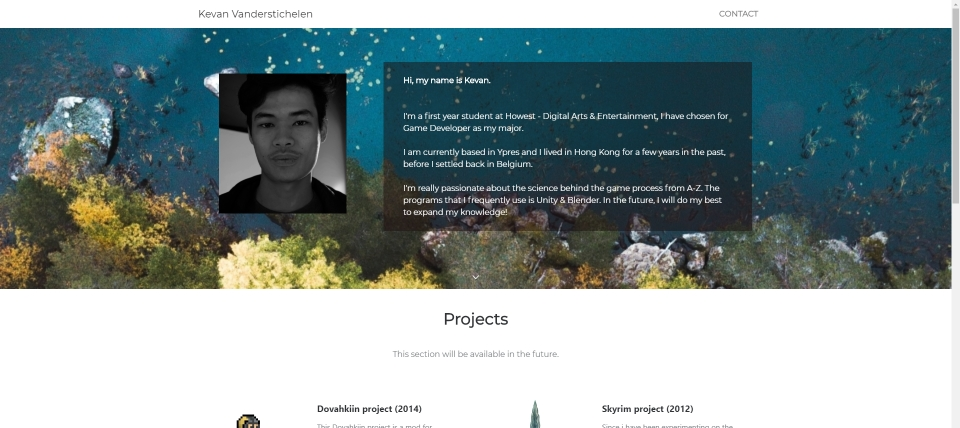

Realtime Beat-Detection
Holographic visuals project in Unreal Engine 4
Watch demo Read MoreMore Development log available soon.
Realtime Caustics
In DirectX Raytracing
Read full paper Read MoreMore Development log available soon.
Project Access
Online multiplayer fast-paced sports arcade game in Unreal Engine 4
watch Trailer Download now Read moreMore Development log available soon.
Aåstro
Unity couch co-op game project 2020
Download now Read moreIntroduction
For this project, we used Unity Game Engine. I worked with: Aitor Randez (Artist), Wouter Begas (Artist), Louis Herman (Programmer). Our goal was to create a couch-coop arcade game.
The idea was to make a sci-fi shooter in space, where you can move your base and eventually use it at your advantage. All players have an oxygen cord that is attached to your suit, this element is keeping the players together and teamwork is vital. It's a half open-world game, so you can play it at your own pace. At the end of the level, there is a boss that you can defeat to complete your mission.
Prototype
The prototype was to test out of the gameplay elements that would be fun. And eventually, things that we aren't sure of, for example, the oxygen cord that follows you around (with/without physics). We've even used both engines to decide which is the best option for us.

Result
You can consult more info or download and play the game @ https://kevanvanderstichelen.itch.io/aastro.

Survival AI
AI programmed to survive as long as possible
Read moreIntroduction
This project is programmed with C++ and a start framework. The ground is made up of meshes which I implemented a pathfinding system to it. AStar and others were not interesting in this kind of map layout. I've had the choice between a Finite State Machine & Behavior Tree. I've gone with the behavior tree system because it's used widely for AI. while FSM is mostly used for visual programming.
Behavior Tree
Result
The AI will scout around the map (given random waypoints), when a house is detected
it will try to enter and sweep the house. When an item is found, he'll put and sort its inventory.
When the AI's inventory is full, he will mark the item and return back in the future. When an enemy is
in sight, he'll aim & shoot. When the AI doesn't have a weapon, he'll flee.
Mortal & Villain
Local multiplayer fighter game with DirectX 11
Read moreIntroduction
This project is programmed with C++ and start library’s of DirectX in Visual Studio 2019. I used an unfished version of Overlord Engine and build my way through to a finished version. To finish off this project I made a simple fighter game where you can choose your avatar and deploy on the field. You can move objects in the house to block your opponents path. When the Mortal survive long enough, the Villain will get caught and lose the game unless the villain get's the mortal first.
As for the setting of the scene I mainly used Phong, diffuse materials and some simple texture colors. There is shadow mapping and a direction light.
Result
SCI-FI room
Mid-poly modelled and textured spaceship room
Watch video Read moreIntroduction
This project is modeled & textured with 3dsmax & Photoshop and assembled on Unreal Engine 4. I started modeling a block out of my level, so to give my level a feeling of how things are layed out. When I’m satisfied with the result I continued to make a modeled version (mid-poly) and try to make sense of everything. And the last step was filling texture to all my models that I’ve created and polished the scene with great lighting.
Blockout/Silhouette
Result
Bubble Bobble
Self-made game engine
download now Read moreIntroduction
This project is programmed with C++ Visual Studio 2019. For my Engine, I added a lot of current Programming design patterns such as: Commands, Game Loop, Components, Singleton, State Machine, Patterns… Also, you can import a .Jpg/.Png file to generate a collision for the map. It fully supports XBOX controller & Audio system. There is also some Debug rendering that you can use from. And to demonstrate how it works together I Re-made a small demo for Bubble Bobble. More info @ https://github.com/kevanvanderstichelen/Engivan.
Result

Rasterizer
3D Rendering project with rasterizer technique
SOURCE CODE Read moreIntroduction
This Project is programmed with purely C++ Visual Studio 2019 and a start Math library and runs on the CPU. Starting off the project I programmed a triangle with each corner has its own color weights , so to build that further up I used the weight to texture it for the first time. After that works successfully I parsed a flying motorcycle to the scene and added some shading with a direction light. To make it more realistic I used Phong, Normal map, glossiness map & specular map. I’ve also added a fire effect on the exhaust with transparency. And last but not least for optimizing this project I've added Triangle box colliders & Frustum clipping.
Result
Raytracing
3D Rendering project with raytracing technique
SOURCE CODE Read moreIntroduction
This Project is programmed with purely C++ Visual Studio 2019 and a start Math library. This project runs on the CPU. I started off with a plain ray-intersection & sphere ray-intersection rendering (with plain colors). To continue my journey, I’ve implemented Camera movement, lighting and PBR materials. After that, I tried rendering triangles.
Spheres & Triangles rendering
Result
To end this project, I’ve made a “.Obj” parser to import my custom meshes into the Scene.
DAE Bot
Mad-Max themed project
Read moreIntroduction
For this project, I used 3dsmax for rigging & modeling. For the baking & texturing I used Substance Painter. And the focus of this project is the PBR pipeline of the model. By the style of the DAE bot I got inspired by the original one in the Campus Level of Howest. And giving the bot a bit more mad-max themed feeling...I added rust, dust and edges that are weld with iron in a messy way.
Result

Cube Collector
Unreal game engine prototype
Read moreIntroduction
This project is programmed with Unreal Blueprints system and a small part with C++. The Goal of the game is to get as much as possible cube back to your base to gain points, on the route, you’ll have weapons that you can use at your advantage. The HUD gives out which blocks are valid to let you score. And there is AI that will try to beat you or even kill you before the game ends.
Result
Microsoft Designer Mouse
High-poly modelled mouse
Read moreIntroduction
This project is modeled with 3Dsmax. I got inspired by my own mouse, I really like minimalistic designs personally.
Result


Tron
Assembly programmed minigame (MOS6502)
Play demo Read moreIntroduction
This project is programmed with low-level assembly language. Me and Pepijn Verheart made a local-multiplayer game based on Tron. Where you try cage your opponent and if someone hits the “Wall”, the game resets back and gives the other player the score. When the scoring bar is full there will be a winner.
I programmed the HUD part and the movement of the game. As Pepijn Verheart programmed the collision and the end screen. This was all done in the MOS6502 emulator.
Result

Crowd Surviver
Unity game engine prototype
Read moreIntroduction
This project is programmed in C# and is assembled with Unity Game Engine. The Goal of the game is to gather many points as possible. You’ll be spawned with few crowds, you have to eliminate the right pawns (red & yellow ones) and pedestrians you should avoid shooting (else you’ll lose points). Weapons and pickups spawn randomly through the map, so exploring is really a key playing this game. Every round you finished you’ll have the option to upgrade yourself with your points.
Result
Basketball game
Unity leap motion basketball game
Read moreIntroduction
This project is programmed in C# with start Library of Leap Motion. I made a prototype to play basketball with leap motion.
Result
Enchanced Adventurer
Adventure RPG 2D Game
Read moreIntroduction
This project is programmed in C++ Visual Studio 2017. This a part of a RPG game, you can explore the game at your own pace. There are chest’s that you could loot from, and different kinds of enemies that you could defeat such as Skeletons, Dwarfs… Dungeons that you could explore.
As the avatar, you have a bow & slash weapon. And even magic force pushing ability (like star wars).
But you’re limited of your ammo & Stamina (given in the HUD). Coins that you could collect to upgrade yourself on the way.
Result
Annecy City Scene
Small low-poly City
Read moreIntroduction
This project is modeled with 3dsmax & Textured with Photoshop. I got inspired by a city in France, Annecy. I Liked the Nostalgic feeling and the rivers that flow through the city. When designing the scene I wanted to show off the water, Compact City and vegetation.
Cityscene : Annecy
Mens-erger-je-niet
local multiplayer 2D board game
Read moreIntroduction
This Project is purely programmed in C++ Visual studio 2017. The goal of the game is to get all your pawns into the designated area in the middle (Relevant to your color). But by reaching there you have to go through the full round. When stepping on someone else’s pawn you’ll be spawned back to the beginning.
With a Dice that will decide your fate to reach your success. It’s all about luck.
Credits to Dennis Van Malderen for the playfield artwork.
Endless runner
Designing 2D Art for games
Read moreIntroduction
A Simple endless runner game focused on the art. It has 5 Layers with a parallax effect.
The Theme of the game is inspired by Hong Kong, the goal of the game is surviving as long as possible and jumping through traps. Its mechanic is comparable to the offline dinosaurs game of Google. I picked the theme of Hong Kong because it’s a part of my home town, And of course skating is my childhood hobby.
Analyse
Result
2D Scene's
Re-made scene with opposite conditions
Read moreIntroduction
First Scene (Night Scene) is the one I remade from the original one to get the feeling of the artist how it’s all puzzled together. As I’ve made the first scene I tried to make a scene that has other condition and eventually other light settings, so I went with the big planets (Moon to Sun) and added a big boat to give the taste of busyness on daylight. And of course I finished it with a shore to illustrate the relaxed setting.
Night Scene (Original Re-made)
Result

Castle Defender
Expirement game project
Play demo Read moreStarting
When I was searching for inspiration on the internet, I Found an interesting project to begin with before attending Howest - DAE. To get a taste of programming, level design et cetera...
Used programs and the making of Castle Defender
For this project I used Unity, Blender & Visual studio 2017 (C#). I followed a guide that leads me to the fundamental build for this project, then I modify/add/tweak and just play around with codes. It was hard to understand and some point I was also frustrated at the beginning, but nothing will hold me back to continue my first game.

Website
The making of my website
Read moreStarting
The idea behind making my own website was to post my projects, experiments, research... Basicly a portfolio website about myself. Also for peoples that want to contact me or give me reviews about any subject.
Programs that I've used for creating this website
By making a website I could start from scratch, but that would cost me a lot of time. Since my major is Game Developer and not Web Developer. The programs that i'm using to creating this website is Bootstrap. Websites like: W3School, Pinterest, Themeforest... aided me a lot for most of my work.
First build of my website
Everyone start from something, and you will need to improve afterwards. My first build felt really convincing at that point, but for some reason I just want to polish it a little bit more. 
Latest build of my website
I found spare time during my summer vacation, and i wasn't too satisfied about the result of my website. I wanted to start all over, because I already learned the basics of Html, CSS and Javascript. At the beginning I didn't really know well how it functioned. I'm glad about the result, period.